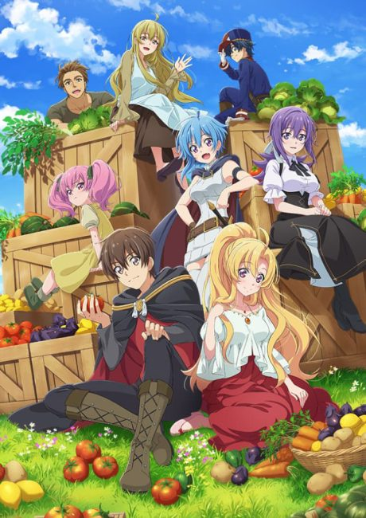
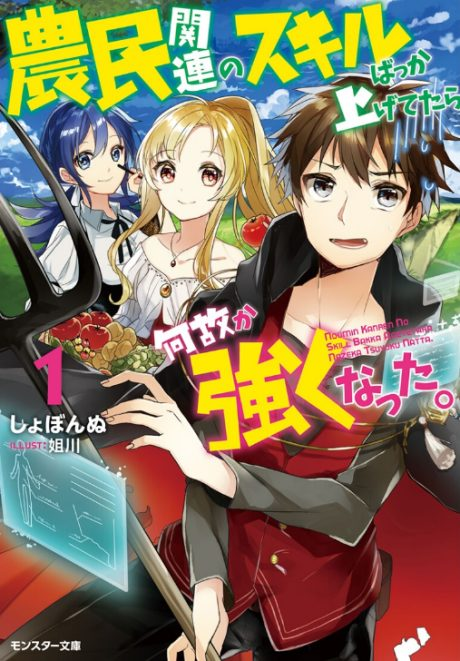

I've Somehow Gotten Stronger When I Improved My Farm-Related Skills
農民関連のスキルばっか上げてたら何故か強くなった。
Al loves farming, and his farming skills have somehow made him one of the strongest people in the world.
We haven't found where the anime ends in the light novel yet.
5.8AniList score
—Animeter, no votes yet
12episodes
Rate it or report where you stopped
Is it worth pushing through?
Built from what visitors report across all 12 episodes.
Loading reports…Checking what other people said about this one.
Sign in above with your email to add your report.
More like I've Somehow Gotten Stronger When I Improved My Farm-Related Skills
 Manga Ch. 3408.9
Manga Ch. 3408.9
 Manga Vol. 77.2
Manga Vol. 77.2
 Manga Vol. 37.0
Manga Vol. 37.0
 Unclear6.9
Unclear6.9
 Done8.0
Done8.0
 Done8.3
Done8.3
 Manga Vol. 45.5
Manga Vol. 45.5
 Manga Ch. 1118.0
Manga Ch. 1118.0
 Manga Ch. 2707.9
Manga Ch. 2707.9
 Done8.1
Done8.1
 Done7.7
Done7.7
 Manga Ch. 2067.6
Manga Ch. 2067.6